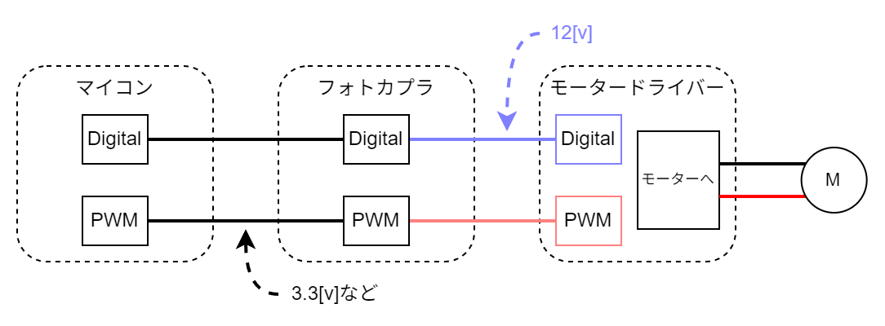

DCモーターの制御
制御用回路
回路的には以下のようになっています。

モタドラICの動作電圧が12Vでマイコンからの信号の電圧が5Vか3.3Vなので電圧を上げる必要があります。それをフォトカプラで信号のやり取りを行っています。
また、PWMの周期を83[μs]に設定します(宗派)。フォトカプラが変換に対応する周波数によって決まっています。
PWM
Pulse Width Modulationの略でパルス幅変調といいます。
一定周期の中で出力がHIGHの時間とLOWの時間の比(デューティー比)で中間の電圧を擬似的に表現します。
PWMの出力波形は以下の図のようなものです。

GPIOピンの出力が5Vでデューティー比が25%であれば、出力は1.25Vになります。出力電圧は以下の式で求められます。
$$ 出力電圧 = {最大電圧} \times {デューティー比} $$
デューティー比が小さいと素子によってはデューティー比0％とあまり変わらない結果が得られるものもあります。各素子の動作電圧などを確認してください。
出力の決定
モーターへの出力はDigitalとPWMの2つで決まり、DigitalとPWMの差が出力になります。図示すると以下のようになります。

Digitalの値がモーターの回転方向に対応し、PWMのデューティー比がモーターの回転速度(印加電圧)と対応します。